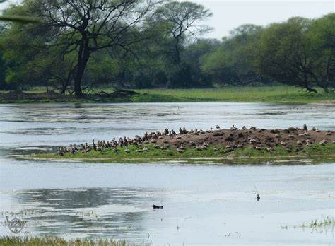

History
The sanctuary was created 250 years ago and is named after a Keoladeo (Shiva) temple within its boundaries.
Initially, it was a natural depression; and was flooded after the Ajan Bund was constructed by Maharaja Suraj Mal,
then the ruler of the princely state of Bharatpur, between 1726 and 1763. The bund was created at the confluence
of two rivers, the Gambhir and Banganga. The park was a hunting ground for the Maharajas of Bharatpur, a tradition
dating back to 1850, and duck shoots were organised yearly in honour of the British viceroys. In one shoot alone in
1938, over 4,273 birds such as mallards and teals were killed by Lord Linlithgow, then Viceroy of India.
The park was established as a national park on 10 March 1982. Previously the private duck shooting preserve of the
Maharaja of Bharatpur since the 1850s, the area was designated as a bird sanctuary on 13 March 1976 and a Ramsar
site under the Wetland Convention in October 1981.
The last big shoot was held in 1964 but the Maharajah retained shooting rights until 1972. In 1985, the Park was
declared a World Heritage Site under the World Heritage Convention. It is a reserve forest under the Rajasthan Forest
Act, 1953 and therefore, is the property of the State of Rajasthan of the Indian Union. In 1982, grazing was banned
in the park, leading to violent clashes between local farmers and the government
|

|